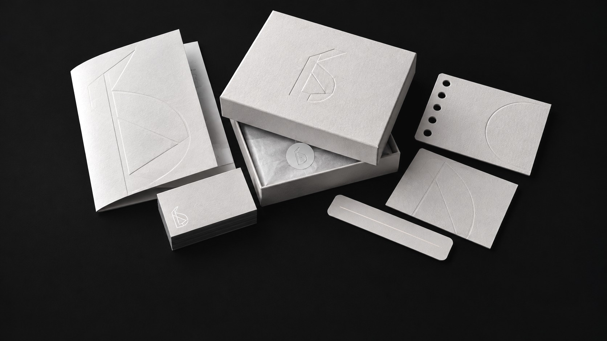
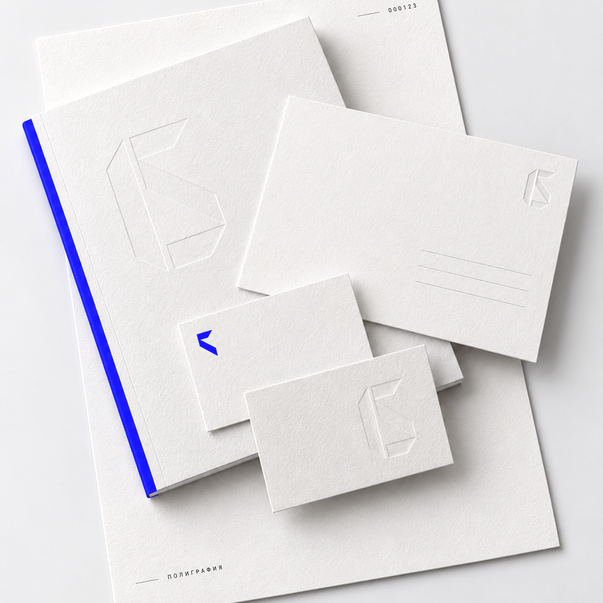
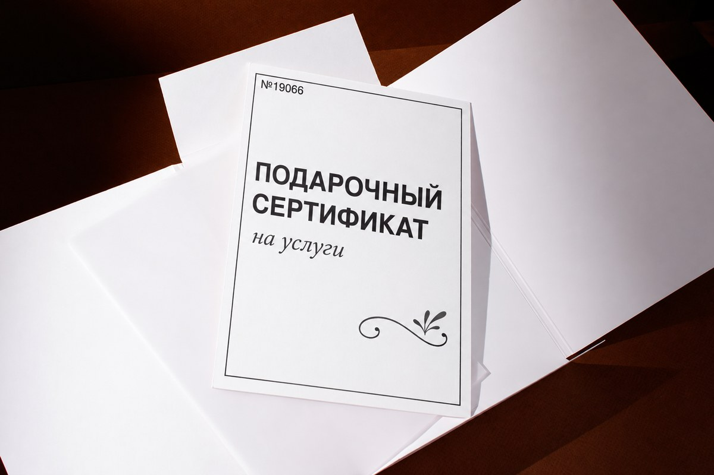
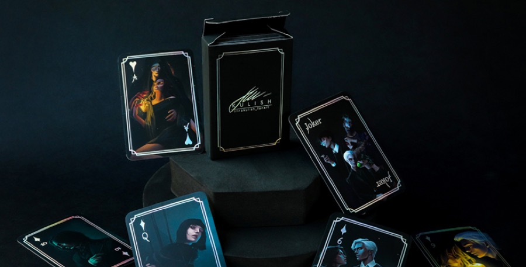
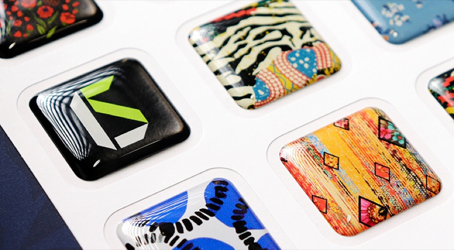

Дизайн-студия со своей типографией
Рисуем макет и печатаем тираж в Москве, без посредников. Посчитаем под ваш тираж и срок.
Что делаем
-
01
80 услуг
ПолиграфияВизитки, открытки, сертификаты, каталоги, бланки

-
02
56 услуг
Упаковка и этикеткиКоробки, пакеты, этикетки, подарочные наборы

-
03
9 услуг
Логотип и фирменный стильЗнак, гайдлайн, носители, макеты под печать

-
04
25 услуг
Корпоративный брендингМерч, обвесы, оформление событий и офисов


Сколько стоит дизайн
Готовой цены нет: макет одной этикетки и линейка из двадцати вкусов — разная работа. Ответьте на три вопроса — вернёмся со сметой в течение часа в рабочее время.
Считает менеджер, а не калькулятор: на цену влияют объём работы, количество макетов и срок. Печать идёт отдельной строкой — своё производство в Москве, поэтому тираж считаем тут же, а не через посредника. Если задача решается проще и дешевле, так и скажем.
Малый тираж — это нормально
Половина заказов у нас — до ста штук. Дизайн на таком тираже стоит дороже печати, поэтому считаем прежде всего работу студии, а бумагу и станки подбираем под неё.
- 35коробок с окном
- 50настольных игр в подарок партнёрам
- 50суперобложек для книги
Лечим макеты


Тот же тираж и та же бумага. Поменялись только вёрстка, шрифт и поля — и сертификат перестал выглядеть распечаткой.
Посмотрим и вернёмся со списком, что в нём чинить. Это бесплатно и ни к чему не обязывает.
Проверить макет или перетащите файл сюда
Работы
-



-

-
-
-

-


Как мы работаем
-
Разбираемся в задаче
В день обращения. Спросим про тираж, сроки и повод. От этого зависят бумага, способ печати и цена.
-
Считаем и показываем макет
1–2 дня. Присылаем смету и первый вариант. Правки по макету входят в стоимость.
-
Согласуем цвет и материал
1 день. Покажем образцы бумаги и распечатку — так вы увидите тираж заранее, а не после печати.
-
Печатаем и отдаём
2–5 дней. Печать на своём производстве. Забираете сами или привозим по адресу.
Весь путь от заявки до готового тиража — 4–8 дней
Посчитаем и подскажем
Оставьте контакт — вернёмся со сметой и вариантами. Если задача решается проще, так и скажем.
Что дальше
- Посмотрим задачу и уточним, если чего-то не хватает
- Посчитаем стоимость под ваш тираж и сроки
- Пришлём смету и первый вариант макета
Не любите формы — напишите в Telegram, WhatsApp или Max, позвоните +7 495 021-35-77 или напишите на zakaz@litera.studio.